Zennの「LLM」のフィード
フィード
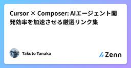
Cursor × Composer: AIエージェント開発効率を加速させる厳選リンク集
Zennの「LLM」のフィード
Xで見つけた興味深い情報をメモとして追加していきます。随時更新予定。 Cursorとペアプログラミングするための向き合い方Cursorが動いてくれない…と不満を持った人におすすめの記事。Cursorとペアプログラミングするための向き合い方を実例を交えて解説してくれています。実際に取り入れてみましたが、かなり手応えを感じています。https://skylarbpayne.com/posts/cursed-cursor Cursorにデバッガー モードとプランナー モードを追加するCursorのComposerに「Debugger Mode」または「Planner Mod...
5時間前
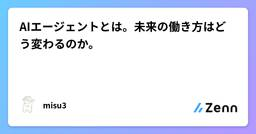
AIエージェントとは。未来の働き方はどう変わるのか。
Zennの「LLM」のフィード
AIエージェントとはAIエージェントとは、 ユーザーの指示を受け取り、自律的にタスクを実行する人工知能システム のことです。簡単に言うと、 「頼んだことを自動でこなしてくれるアシスタント」 のような存在です。従来のコンピューターシステムとは違い、AIエージェントは状況に応じて適切な判断を下し、最適な方法でタスクを遂行してくれます。AIエージェントの特徴として、以下のポイントが挙げられます。自律性: 人の指示なしにタスクを実行し、状況に応じて適切に対応する。適応性: 環境の変化に対応し、学習することでパフォーマンスを向上させる。インタラクティブ性: ユーザーとのやり取り...
6時間前
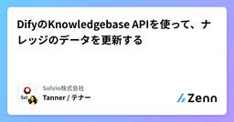
DifyのKnowledgebase APIを使って、ナレッジのデータを更新する
Zennの「LLM」のフィード
はじめに生成AIを活用することができるローコード / ノーコードツールにはナレッジと呼ばれる機能があります。ナレッジを利用することで簡単に社内データなどを参照可能なRAGを構築することができます。このナレッジにはAPIが準備されており、RAGで利用するデータの更新をAPI経由などで実施することが可能です。API経由で更新が可能となることで、Lambdaの定期実行などを利用すると自動で参照データを更新することができます。この記事では、 DifyのKnowledge-base APIを利用してDifyのナレッジ（RAG）に対する操作を試してみます。 前提条件この記事の内容はD...
8時間前
LLMS.txt: AI時代のWebサイト最適化ガイド
Zennの「LLM」のフィード
3行まとめ主要なLLMプラットフォームが対応し、効率的なサイト情報提供が可能になります。NotebookLMなどのツールを使って、サイトの情報を効果的に活用できます。自分のサイト2つをLLMS.txtに対応し、NotebookLMにナレッジとして組み入れて遊んでみました。 なぜLLMS.txtか？2024年末から注目度が上昇日本国内での認知度が向上主要LLMプラットフォームが積極的に対応Webサイトの新しい標準として確立しつつある自分が書いたblogのRAG用データとして使えそう LLMS.txtとはLLM向けの構造化されたWebサイト情報提供ファ...
13時間前
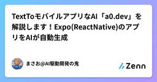
TextToモバイルアプリなAI「a0.dev」を解説します！Expo(ReactNative)のアプリをAIが自動生成
Zennの「LLM」のフィード
スマホアプリ開発というと、通常は企画・設計から始まり、フロントエンド・バックエンドの実装、テスト、デプロイと、かなりの時間と労力がかかるイメージがありますよね。最近、人工知能（AI）の進化や開発ツールの高度化により、アプリ開発のハードルを一気に下げるサービスが続々と登場しています。その中でも今、注目を集めているのが 今回紹介する「a0.dev」 です。https://a0.dev/a0.dev は Y Combinator（YC） から支援を受けており、テキストの指示（プロンプト）だけで、フル機能の React Native アプリが生成できる という画期的なプラットフォームです。...
15時間前
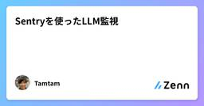
Sentryを使ったLLM監視
Zennの「LLM」のフィード
はじめに大規模言語モデル (LLM) は膨大なテキストデータをもとに学習される技術で、自然言語を巧みに処理できる点が特長です。近年では、あらゆる分野でLLMの導入が進み、モデルのパフォーマンスを常に確認するモニタリングが非常に重要になっています。モニタリングを行うことで、ユーザーの求める回答が返っているかを評価し、運用ミスによるリスクを低減することが可能です。本記事では、LLMモニタリングの概要と、Sentryを活用したLLMの監視について解説します。 LLMモニタリングとはLLMモニタリングとは、大規模言語モデルの動作や成果物をモニタリングし、モデルが本来の目的を満た...
1日前
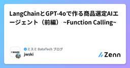
LangChainとGPT-4oで作る商品選定AIエージェント（前編） ~Function Calling~
Zennの「LLM」のフィード
はじめに大規模言語モデル (LLM) がデータや計算ツールを活用して答えるしくみを、Function calling という機能を使って作りました。この記事では、まず背景をご紹介し、GPT-4o の API と langChain を使った実装方法や tips を解説します。記事が長くなったので、本記事で Function Calling について扱い、後編でエージェント化の部分を解説したいと思います。 目指す世界観例えば、EC サイトで部品を探すときに、長さ700mmで100kgの装置を載せられるアルミフレームはどれ？と聞いたら以下のアルミフレームは、長さ700m...
1日前
「rokadoc」を使ってRAGを試してみる
Zennの「LLM」のフィード
rokadocNTT Comから出ている非構造化データを生成AIに適した構造化データに変えるツール↓ニュースリリースhttps://www.ntt.com/about-us/press-releases/news/article/2025/0219_2.htmlrokadoc(public beta版)のお試しサイトからRAGを試す。(クォータ制限上限がある。)↓お試しサイトhttps://rokadoc.ntt.com/データセットはJdocQAを利用することにする。ドキュメントをアップロードすると、解析待ちになって、テキスト構造化(結果全体としてはjson)にし...
1日前
DevinにVitest移行させたら数分で5000円溶けた [人間がやったほうが安い] 39
39
Zennの「LLM」のフィード
これは5000円かかっても何も進捗が得られなかったが結構悔しかったのでせめてもの抵抗でPRにコメントしたところです。この記事は最近話題のAIエンジニア「Devin」 を使ってライブラリ開発をしてみた体験談です。Devinのセットアップから始まり、上手く行ったケースnpmライブラリを公開しドキュメントを書いてもらった = 3300円💸💸何も成果が得られなかったケーステストフレームワークを変えようとして失敗 = 5000円💸💸💸などを紹介しています。OSS上での作業だったためPRのリンクなども載せていますので、Devinの修正など自由にご覧いただけます。ぜひ最後...
2日前
【AIエージェント】Hugging Faceのエージェントコースを学んでみる
Zennの「LLM」のフィード
はじめに最近膝がむずむずしてなかなか眠れない、ノベルワークスのりょうちん（ryotech34）です。今回は、AI開発プラットフォームとして有名なHugging Faceで最近スタートしたAgent Courseについて簡単にまとめてみました。https://huggingface.co/learn/agents-course/unit0/introduction Agent CourseとはAgent Courseとは、その名の通りAIエージェントについて体系立てて学べるコースです。ユニットごとに講座が公開され、ステップバイステップでAIエージェントを学ぶことが出来ます...
2日前
【失敗】レビューコメントから最強のレビュー AI を作ろう！【反省】
Zennの「LLM」のフィード
!この記事は「なんの成果もあげられませんでした😫」という内容です。最強のレビュー AI はこの記事の内容を参考に作っても完成しませんのでご了承ください。記事の後半で「AI x コードレビューはどうしていくべきか」という考察を記載していますので、どちらかといえばそちらが本題です。 序章🧑🏻💻「今日もミーティングに要件定義、実装以外でやること盛り沢山だ...」🧑🏻💻「あ、でもこれだけは今日中にレビューしてあげないと...あぁ...もう無理...🤢」〜〜これはコードレビューから PjM を開放するべく LLM 初心者が立ち向かう物語である〜〜 第１章 脈動🧑🏻💻「...
2日前
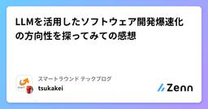
LLMを活用したソフトウェア開発爆速化の方向性を探ってみての感想
Zennの「LLM」のフィード
こんにちは、スマートラウンドのtsukakeiです！今日はLLMを活用したソフトウェア開発爆速化の方向性を探ってみての感想を共有したいと思います 要約OpenAI o1のような高性能LLMは、開発爆速化に確実に使える一方で、まだまだ制約が存在しており、そこをいかに乗り越えられるかがAI活用の鍵となりそうLLMを最大限に活用するためには人間側の知識やスキルも重要であり、エンジニアとしては継続的に学習・検証を行う必要がある 活用したLLMs弊社ではChatGPT Team PlanとGoogle Workspaceを使っていることもあり、今回は下のLLMたちを使いました...
2日前
進化的モデルマージ実践
Zennの「LLM」のフィード
今回はLLMの進化的モデルマージを実践していきます。進化的モデルマージはEvolutionary optimization of model merging recipes（Akiba et al., Nature Machine Intelligence, 2025）という論文で提案された遺伝的アルゴリズムに基づくモデルマージ手法です。当該論文では数学のタスクなどで性能向上を報告しています。 手順の概要マージしたいモデルを複数決めるタスクを決める上記をconfig.yamlにフォーマットに従って記載する.進化的モデルマージを実行するこれだけです。公式のドキュメントはこ...
2日前
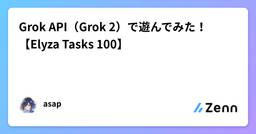
Grok API（Grok 2）で遊んでみた！【Elyza Tasks 100】
Zennの「LLM」のフィード
はじめにぬこぬこさんが有益な記事を出してくださり、私のモチベーションが高まったので遊んでみました。https://zenn.dev/schroneko/articles/de3a8f574e9ea4https://x.com/schroneko毎月150ドルの無料クレジットは圧倒的太っ腹すぎる・・・共有してくださって感謝です。!ぬこぬこさんの記事でも、注意喚起されておりますが、無料クレジットをもらったチームの利用データは学習に利用されますので、注意してください。（あくまで個人利用されることをお勧めします）詳しくは、ぬこぬこさんの記事をご覧ください。 やったこと...
2日前
Grok API にて $5 課金すると $150 分使えるようになるらしい？ 1
Zennの「LLM」のフィード
tl;drGrok API に $5 課金すると毎月 $150 分のクレジットが使えるようになるよGrok 3 はまだ使えないよ（2/18 時点） 課金をしてみるhttps://console.x.ai/Grok API Console に気になる文言を見つけました。xAI とデータを共有するにはオプトインしてくださいAPI リクエストを共有して、Grok の改善にご協力いただくと、毎月 150 ドル相当の無料 API クレジットを獲得できます。有効にすると、オプトアウトすることはできません。なかなか太っ腹。検証用途に使うには十分なクレジットだと思い、実際...
2日前
Large Language Diffusion Models
Zennの「LLM」のフィード
https://arxiv.org/abs/2502.09992 要約この論文は Large Language Diffusion Models (LLaDA) を提案し、従来の自己回帰モデル (ARM) に代わる新しい言語モデルのアプローチを示している主な特徴 :マスク拡散モデルをベースにトークンの段階的なマスキングと予測を行う8B パラメーターまでスケールし LLaMA3 8B と同等の性能を達成トレーニングは事前学習と教師あり微調整 (SFT) の 2 段階で構成2.3 兆トークンで事前学習を実施し 450 万ペアのデータで SFT を実施評価結果 :一般...
2日前
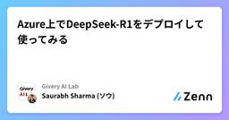
Azure上でDeepSeek-R1をデプロイして使ってみる
Zennの「LLM」のフィード
1. はじめに初めまして、Givery AI Lab所属のSharma Saurabh（ソウ）です。最近「DeepSeek」という名の新たなプレイヤーが世界のAI市場を席巻しているのを、皆さんもニュースやSNSなどで耳にしたのではないでしょうか。Apple App Storeの無料アプリランキングでChatGPTを抜き去り、現在最もダウンロードされているアプリとして話題をさらっています。特に驚きなのは、中国発のスタートアップがわずか半年あまりで、この実績を成し遂げたという事実です。 そんなDeepSeekが打ち出したオープンソースモデル「DeepSeek-R1」は、“AIのスプー...
2日前
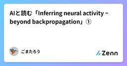
AIと読む「Inferring neural activity ~ beyond backpropagation」①
Zennの「LLM」のフィード
気になった英語の論文をAIで翻訳しながら読んでいきます。論文はこちらです。Inferring neural activity before plasticity as a foundation for learning beyond backpropagationhttps://www.nature.com/articles/s41593-023-01514-1こちらの論文では、これまでニューラルネットワークで使用されてきた誤差逆伝播法(back propagation)という手法は生物の自然な学習に比べると不自然な制約が多く課されている点を挙げ、より生物学的学習に近い手法として...
3日前
LLMs.txtについての覚書 78
Zennの「LLM」のフィード
LLM時代のWebアクセスとは世は大LLM時代。皆が元気にTavilyでWebクロールしたり、AI AgentでガンガンDeep Researchする時代は、人間用のWebサイトにえげつない負荷を与えているのであった。そんな時に「仕様を1枚のテキストにまとめたよ！」みたいな情報が時々流れてくるが、これはLLMs.txtというらしい。恥ずかしながら仕様の存在を知らなかったので、勉強がてらにまとめてみる。 LLMs.txt?Answer.AI の Jeremy Howard 氏が2024/9/3に提案したのが発端のようだ。https://llmstxt.org/LLMs.t...
3日前
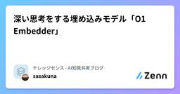
深い思考をする埋め込みモデル「O1 Embedder」 21
Zennの「LLM」のフィード
導入こんにちは、株式会社ナレッジセンスの須藤英寿です。普段はエンジニアとして、LLMを使用したチャットのサービスを提供しており、とりわけRAGシステムの改善は日々の課題になっています。今回は、Embeddingの過程で深い思考を行うモデル「O1 Embedder」について紹介します。https://arxiv.org/pdf/2502.07555 サマリーEmbeddingはRAGのシステムにも欠かせないもので、Embeddingの性能がそのままRAGの性能に直結すると言っても過言ではありません。O1 Embedderは、EmbeddingとOpenAIのo1モデルの...
3日前